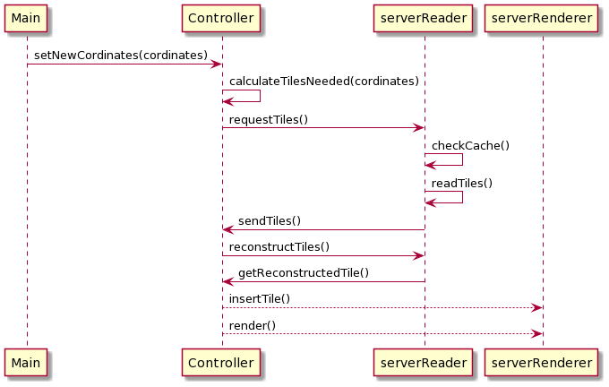

Overview
Astronomical data are huge in size. When working with such large data sets, it is crucial that memory management is prioritized for scalability as well as obtaining fast process speed for better server response time. For this reasons, This is why C++ was chosen to implement the server; it provides good memory management and is computationally efficient. C++ is also widely utilized in computer graphics applications, scientific or, otherwise and also web applications’ servers that require fast response times. One of our primary motives for this project is to build a proof of concept for CARTA which is also built in C++ language.
The Server used VTK (Visualisation toolkit), which is a C++ library, for volumetric rendering high resolution data on the server side and encoding it to JPEG (Joint Photographic Experts Group) picture format that will be sent to client side. This library was chosen because it is widely used in scientific volume rendering.
Pre-Processing
Disk reading is a slow process in computers. Reducing this bottle- neck created from disk reading will increase the speed of the server dramatically. FITS file format only provides sequential reading from disk while HDF5 file format provides parallel reading and chunking features. Reading data through HDF5 file format will increase servers’ response speed resulting in a more efficient astronomical rendering system.
Mipmaps are different levels of low-resolution cubes of the data. Another way to speed up server performance is by pre-processing these mipmaps before the server and client renders it. HDF5 file format can store different datasets in its file format, allowing it to store pre-processed mipmap datasets. These mipmap datasets are stored in chunks, each of which contains one cubelet. These cubelets dimension sizes are 64x64x64 which makes them 1MB in size. This could be easily changed in the code if different chunk sizes are required.
Since most of the astronomical data is stored in FITS format, a Converter is needed to convert FITS files to the desired HDF5 file format. Diagram below illustrates the process of the converter which converts a FITS file format into a HDF5 file format.

Disk Reading
To achieve maximum potential reading speeds from a disk, especially SSD, we need to read data from disk in small blocks such as 512Kb, 1MB and 2MB. An experiment was conducted to test and analyze what size data will achieve maximum reading speed from the disk. The system was built to allow cubelet sizes and chunk sizes to be easily changed, according to the chosen cubelet size during pre-processing FITS files to HDf5 format.
When the server needs to read from the disk, it will first check the memory cache and read cubelets that are not cached but required. All cubelets that are read will have a unique ID representing their position in the mipmap dataset. These cubelet’s dimensions and also their content are stored in cache memory. If any cubelet is requested for rendering again, it is quickly retrieved from cache memory, which speeds up the server response.
Sending cubelets to client
When the User crops a cube visualization on the client-side, the client requests new cubelets from the server to render a higher resolution of the cropped section. The server first checks the memory cache and reads missing cubelets from the disk. After all cubelets are in memory it is compressed and sent to clients one by one, as illustrated in below diagram. These cubelets are decompressed on the client-side, reconstructed to a larger cube, and then this cube gets rendered.
Rendering new volume from crop coordinates
When the user crops the cube on the client-side, the client sends crop points to the server. Once the cube is cropped, the server can render a higher resolution of the cropped section. The server calculates new cubelets needed from these crop points, reads if these cubelets are not cached already, reconstructs cubelets to get a single large cube, and then renders this higher resolution cube, as illustrated in below diagram.
Encoding Image
The high-resolution images on the server side are encoded using VTK library. VTK library uses FFMPEG to encode these images. The image is encoded directly to servers memory and then it is directly sent to client from the memory. (check diagram below)
Results
Reading astronomical data from disk
Before doing disk reading tests, various sizes of FITS files were converted to HDF5 files. During conversion, the mipmaps were chunked in different cubelet sizes. For this testing all 250MB, 500MB, 750MB, 1000MB and 2000MB FITS files were converted to HDF5 Files 3 times, one time chunking in 512K, one time chunking in 1MB and last time chunking in 2MB cubelets.
Diagram on the right shows test results when cubelets are read from HDD. Reading in a block size of 1MB gave the best speed result but the time difference between other cubelet size reads is unnoticeable. Let’s take the speed of reading 1000MB file in 1MB cubelets because the server will be set to render 1000MB data. From benchmark results, with a speed of 56.0 MB/s, it will take 17.85 seconds to read this file. The test result for servers’ read speed is 17.89 seconds. This means we are using HDD’s reading speed to its full potential.
Diagram on the right shows test results when cubelets are read from SSD. The best reading speed was achieved when reading cubelets in the size of 1MB. This time reading speed difference of 1MB compared to other cubelets sizes was more noticeable. From benchmark results, SSD reads 475 MB/s the block sizes of 1MB. It will take 2.1 seconds to read 1000MB with a speed of 475 MB/s. The test result for servers’ read speed is 2.6 seconds. This means the server is using SSD’s reading speed to its full potential. Server reading speed is slower since the server is calculating cubelets’ coordinates in the file and allocating memory for it.

Rendering Volume Data
Rendering volume is a computationally expensive process. From diagram on the right, the test results provide that rendering time increases linearly to data size. Rendering 1000MB data in volumetric took 12.3 seconds. Rendering is only performed once a client establishes a connection and the user crops the cube. This is unlikely to happen often and time consumed on the client-side for receiving new cubelets and rendering them on the client-side should cover some part of it. Users will be able to still use low-resolution render on the client-side to get a better camera position, and the server will send high-resolution images according to the new camera view as soon as rendering is complete.
Encoding Volume to Image
Once the volumetric rendering is done on the server side, the server sends a high-resolution image to a client. The resolution chosen for the testing was 1920x1080 to give the user a better experience in terms of quality. The time taken to encode the images from volumetric data is constant over all different render sizes, as seen in right diagram. The average time it took for the server to encode the image is 71.9 ms.